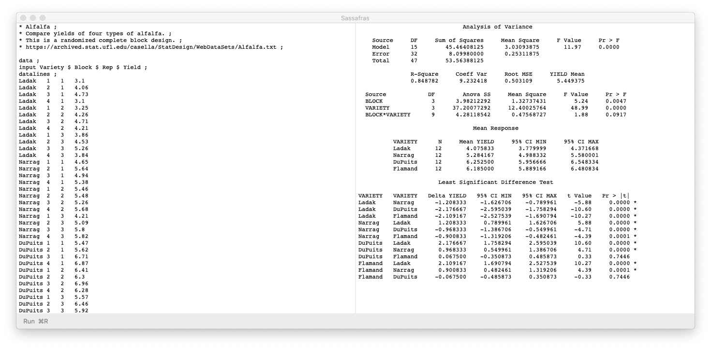

Sassafras is an app for analyzing data the old-school way with data steps and procedure steps.
Sassafras manual
Note on anova results
The following zip file contains demo programs and data files.
For Sassafras installed from the Mac App Store, data files need to be put in the directory
~/Library/Containers/com.gweigt.sassafras/Data/
demos.zip